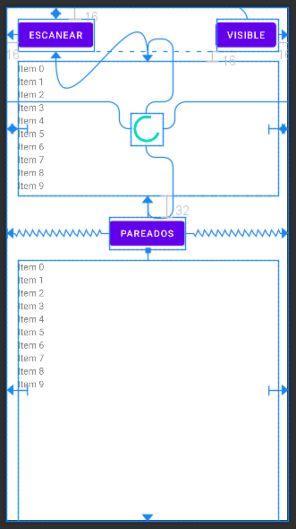

Para que dos dispositivos puedan conectarse, uno de ellos tiene que establecerse en modo de visible y conectable; el otro estará visible y en búsqueda hasta que encuentre al primero. Entonces se llevará a cabo el emparejamiento de los dos dispositivos.
El emparejamiento puede ser directo o requerir una contraseña. Una vez emparejados, los dispositivos pueden establecer una conexión y comenzar el intercambio de datos de uno a otro.
Veamos cómo programar una aplicación que busque los dispositivos Bluetooth que tenga a su alcance. Abrimos Android Studio y ejecutamos File > New > New Project... > Empty Activity > Finish. Tendremos la actividad MainActivity y su layout activity_main.
Primero vamos a añadir en el build.gradle del módulo de aplicación las siguientes librerías:
def coroutines_version = '1.3.7'
// Coroutines
implementation "org.jetbrains.kotlinx:kotlinx-coroutines-core:$coroutines_version"
implementation "org.jetbrains.kotlinx:kotlinx-coroutines-android:$coroutines_version"
// EventBus
implementation 'org.greenrobot:eventbus:3.2.0'
// RecyclerView
implementation 'androidx.recyclerview:recyclerview:1.1.0'Las primeras dos instrucciones implementation son para poder utilizar coroutines en nuestra app, de modo que podamos llamar a funciones de BT sin que el hilo principal se bloquee. Después incluimos EventBus para enviar mensajes desde una clase a otra. Por último, incluimos la librería de Android para utilizar las listas reciclables. El RecyclerView es un componente de interfaz gráfica que nos permite presentar una lista de elementos de forma eficiente.
Para manipular el dispositivo Bluetooth del terminal, nuestra app tendrá que registrar algunos registros en el manifest. Además, definiremos una clase App:
<?xml version="1.0" encoding="utf-8"?>
<manifest xmlns:android="http://schemas.android.com/apk/res/android" package="com.example.bluetooth">
<uses-permission android:name="android.permission.BLUETOOTH"></uses-permission>
<uses-permission android:name="android.permission.BLUETOOTH_ADMIN"></uses-permission>
<application android:name=".App" android:allowbackup="true" android:icon="@mipmap/ic_launcher" android:label="@string/app_name" android:roundicon="@mipmap/ic_launcher_round" android:supportsrtl="true" android:theme="@style/AppTheme">
<activity android:name=".MainActivity">
<intent-filter>
<action android:name="android.intent.action.MAIN"></action>
<category android:name="android.intent.category.LAUNCHER"></category>
</intent-filter>
</activity>
</application>
</manifest>Como la hemos definido en el manifest, tendremos que crear una clase Application para nuestra aplicación. Pulsemos con el botón derecho sobre el nombre del paquete de la app y elijamos File > New > Kotlin File/Class. El código es:
import android.app.Application
class App : Application() {
override fun onCreate() {
super.onCreate()
_instance = this
}
companion object {
private var _instance: App? = null
val instance: App
get() = _instance!!
}
}Ahora podemos empezar a diseñar el layout. Añadiremos algunos botones y un par de RecyclerView que mostrarán listas de dispositivos Bluetooth:
<?xml version="1.0" encoding="utf-8"?>
<androidx.constraintlayout.widget.ConstraintLayout xmlns:android="http://schemas.android.com/apk/res/android"
xmlns:app="http://schemas.android.com/apk/res-auto"
xmlns:tools="http://schemas.android.com/tools"
android:layout_width="match_parent"
android:layout_height="match_parent"
tools:context=".MainActivity">
<Button
android:id="@+id/btnEscanear"
android:layout_width="wrap_content"
android:layout_height="wrap_content"
android:layout_marginstart="16dp"
android:layout_margintop="16dp"
android:text="Escanear"
app:layout_constraintstart_tostartof="parent"
app:layout_constrainttop_totopof="parent"></Button>
<Button
android:id="@+id/btnVisible"
android:layout_width="wrap_content"
android:layout_height="wrap_content"
android:layout_marginend="16dp"
android:text="VISIBLE"
app:layout_constraintend_toendof="parent"
app:layout_constrainttop_totopof="@+id/btnEscanear">
<androidx.recyclerview.widget.RecyclerView
android:id="@+id/lstEscaner"
android:layout_width="0dp"
android:layout_height="200dp"
android:layout_marginend="16dp"
android:layout_marginstart="16dp"
android:layout_margintop="16dp"
app:layout_constraintend_toendof="parent"
app:layout_constraintstart_tostartof="parent"
app:layout_constrainttop_tobottomof="@+id/btnEscanear">
<ProgressBar
android:id="@+id/progressBarEscaneo"
android:layout_width="wrap_content"
android:layout_height="wrap_content"
app:layout_constraintbottom_tobottomof="@+id/lstEscaner"
app:layout_constraintend_toendof="@+id/lstEscaner"
app:layout_constraintstart_tostartof="@+id/lstEscaner"
app:layout_constrainttop_totopof="@+id/lstEscaner"></ProgressBar>
</androidx.recyclerview.widget.RecyclerView>
</Button>
<Button
android:id="@+id/btnPareados"
android:layout_width="wrap_content"
android:layout_height="wrap_content"
android:layout_margintop="32dp"
android:text="Pareados"
app:layout_constraintend_toendof="parent"
app:layout_constraintstart_tostartof="parent"
app:layout_constrainttop_tobottomof="@+id/lstEscaner"
>
<androidx.recyclerview.widget.RecyclerView
android:id="@+id/lstPareados"
android:layout_width="0dp"
android:layout_height="0dp"
android:layout_marginend="16dp"
android:layout_marginstart="16dp"
android:layout_margintop="16dp"
app:layout_constraintbottom_tobottomof="parent"
app:layout_constraintend_toendof="parent"
app:layout_constraintstart_tostartof="parent"
app:layout_constrainttop_tobottomof="@+id/btnPareados"></androidx.recyclerview.widget.RecyclerView>
</Button>
</androidx.constraintlayout.widget.ConstraintLayout>El resultado sería algo como esto:
